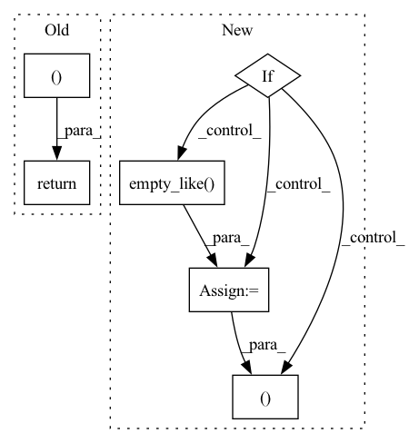

Pattern ID :181
Before Change
// Default return value. Erring on the side of caution here by
// being super verbose.
return [([], [] )]
After Change
except IndexError:
infinite_pairs = None
if infinite_pairs is not None:
print("infinite_pairs =", infinite_pairs)
// "Pair off" all the indices
max_index = torch.argmax(x)
fake_destroyers = torch.empty_like( infinite_pairs) .fill_(max_index)
infinite_pairs = torch.stack(
(infinite_pairs, fake_destroyers ), 1
)
print("infinite pairs, fixed =", infinite_pairs)In pattern: SUPERPATTERN
Frequency: 3
Non-data size: 6
Instances Fragment ID: 1642936
Project Name: aidos-lab/pytorch-topological
Commit Name: 0dd25924d9fd7691de14281351dcee1edd8cfc26
Time: 2021-12-21
Author: bastian@rieck.me
File Name: torch_topological/nn/cubical.py
M Class Name: Cubical
N Class Name: Cubical
M Method Name: _extract_generators_and_diagrams(4)
N Method Name: _extract_generators_and_diagrams(4)
M Parent Class: nn.Module
N Parent Class: nn.Module
M File Name: torch_topological/nn/cubical.py
N File Name: torch_topological/nn/cubical.py
M Start Line: 88
M End Line: 119
N Start Line: 74
N End Line: 141
Before Change
hidden_states, present = self.gpt_neox(
input_ids, position_ids, cu_seqlens, max_s, past_key_values
)
return self.embed_out(hidden_states), present
After Change
)
logits = self.embed_out(hidden_states)
if self.gpt_neox.tp_embeddings:
// Logits are sharded, so we need to gather them
world_logits = [torch.empty_like( logits) for _ in range(self.world_size)]
torch.distributed.all_gather(world_logits, logits, group=self.process_group)
world_logits = torch.cat(world_logits, dim=1)
return world_logits, present
return logits, present
Fragment ID: 1642939
Project Name: huggingface/text-generation-inference
Commit Name: 9987960062e40de2deae030ab7e4ad6f57de0b20
Time: 2023-04-09
Author: olivier@huggingface.co
File Name: server/text_generation_server/models/custom_modeling/flash_neox_modeling.py
M Class Name: FlashGPTNeoXForCausalLM
N Class Name: FlashGPTNeoXForCausalLM
M Method Name: forward(6)
N Method Name: forward(6)
M Parent Class: FlashGPTNeoXPreTrainedModel
N Parent Class: FlashGPTNeoXPreTrainedModel
M File Name: server/text_generation_server/models/custom_modeling/flash_neox_modeling.py
N File Name: server/text_generation_server/models/custom_modeling/flash_neox_modeling.py
M Start Line: 671
M End Line: 671
N Start Line: 674
N End Line: 683
Before Change
hidden_states, present = self.transformer(
input_ids, position_ids, cu_seqlens, max_s, past_key_values
)
return self.lm_head(hidden_states), present
After Change
)
logits = self.lm_head(hidden_states)
if self.transformer.tp_embeddings:
// Logits are sharded, so we need to gather them
world_logits = [
torch.empty_like( logits) for _ in range(self.transformer.tp_world_size)
]
torch.distributed.all_gather(
world_logits, logits, group=self.transformer.process_group
)
world_logits = torch.cat(world_logits, dim=1)
return world_logits, present
return logits, present
Fragment ID: 1642931
Project Name: huggingface/text-generation-inference
Commit Name: 880a76eed5f058043367d9643be8a498b286bde2
Time: 2023-04-12
Author: olivier@huggingface.co
File Name: server/text_generation_server/models/custom_modeling/flash_santacoder_modeling.py
M Class Name: FlashSantacoderForCausalLM
N Class Name: FlashSantacoderForCausalLM
M Method Name: forward(6)
N Method Name: forward(6)
M Parent Class: nn.Module
N Parent Class: nn.Module
M File Name: server/text_generation_server/models/custom_modeling/flash_santacoder_modeling.py
N File Name: server/text_generation_server/models/custom_modeling/flash_santacoder_modeling.py
M Start Line: 355
M End Line: 355
N Start Line: 526
N End Line: 540